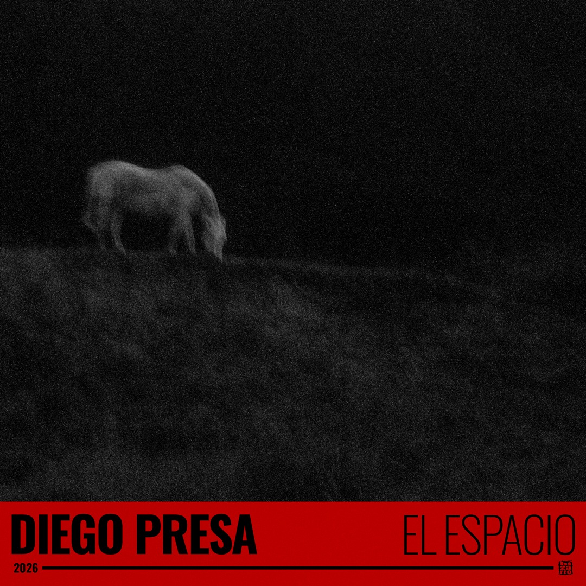

El Espacio
Adelanto del próximo álbum de Diego Presa. Grabada en La Cocina de Betti, Buenos Aires. Nahuel Roht: guitarra criolla. Federico Terranova: violín y viola. Ahmed Isa Juan Ravioli: guitarra criolla, contrabajo, grabación y producción. Diego Presa: voz, guitarra criolla, guitarra folk. Mezcla y masterización: Mauro Taranto. Foto y diseño de tapa: Sebastián Santana.